Explore Zagreb
A Brief History
Zagreb grew from twin medieval settlements on the Sava slopes into the capital of Croatia after union with the Habsburg monarchy and later Yugoslav federation. Baroque churches on Kaptol, the secular Gradec upper town, and 19th-century Lower Town blocks record Catholic institutions, Austro-Hungarian administration, and modern Croatian statehood. Municipal archives, parish records, and surviving architecture help explain how the city connected to wider regional trade routes, court patronage, and modern civic rebuilding after industrial and wartime change.
Attractions Map
Top Sights & Activities
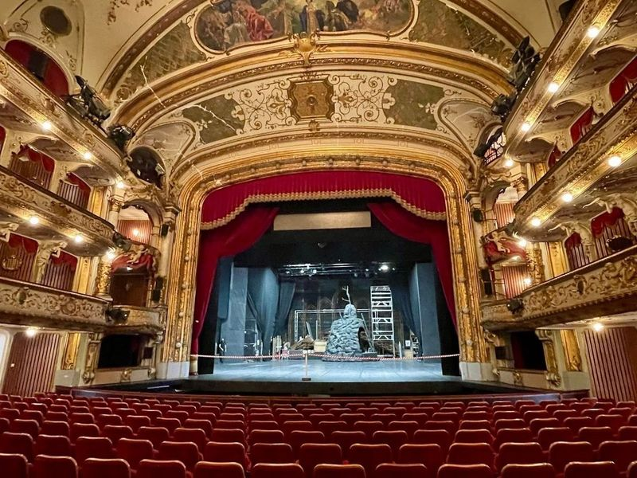
Croatian National Theatre
The Croatian National Theatre in Zagreb is housed in a grand neo-Baroque building dating back to 1895. Designed by the Viennese firm Hellmer and Fellner, it was opened by Emperor Franz Josef himself. The theater's stately interior can be admired during its impressive opera, ballet, and drama performances. Outside the theater stands Ivan Strovic's lifelike sculpture 'Fountain of Life,' depicting four couples around a small pool of water.
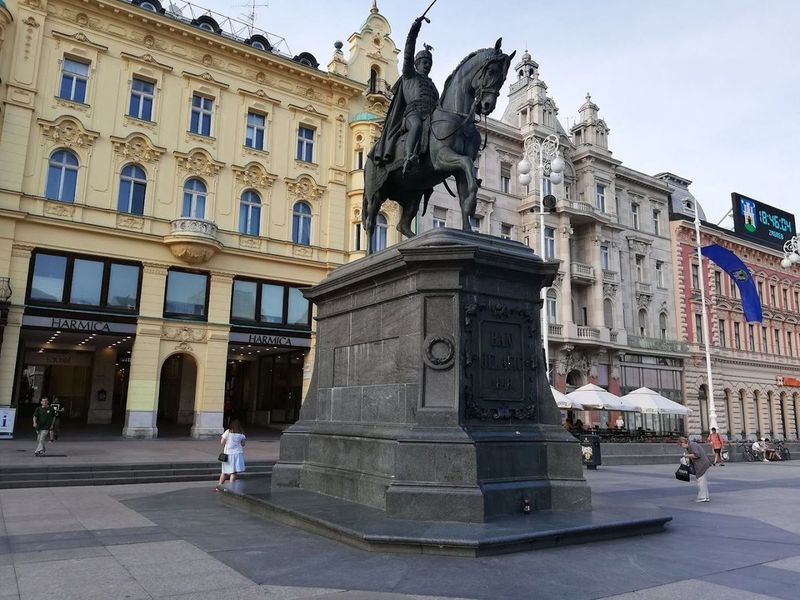
Ban Josip Jelačić Statue
Ban Josip Jelačić Statue, located in the main square of Zagreb, is a popular meeting spot and a must-visit attraction. The pedestrian-friendly square and its surrounding streets are car-free, making it an inviting place to explore day or night. This lively hub offers a vibrant atmosphere with frequent concerts and events that capture the city's essence. It serves as a transport hub with tram stops and is surrounded by shops, restaurants, and cafes.
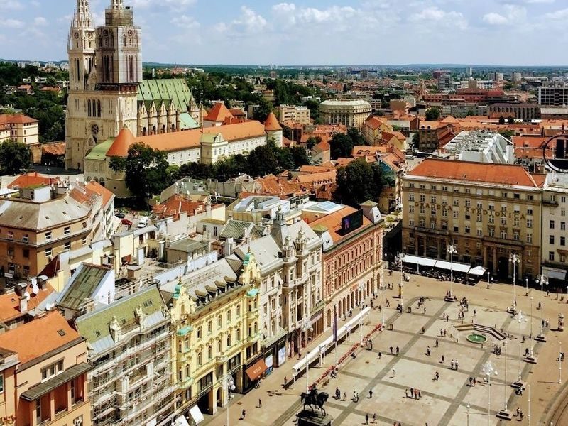
Zagreb 360° observation deck
Zagreb 360° observation deck is situated on the 16th floor of a prominent skyscraper, providing visitors with a bar and panoramic vistas of the city. The Neboder Skyscraper offers unparalleled views of Zagreb's main square, Cathedral, Upper and Lower Town, as well as other significant cultural and historical landmarks. This building has been a fixture in Zagreb's skyline since its establishment in 1959.
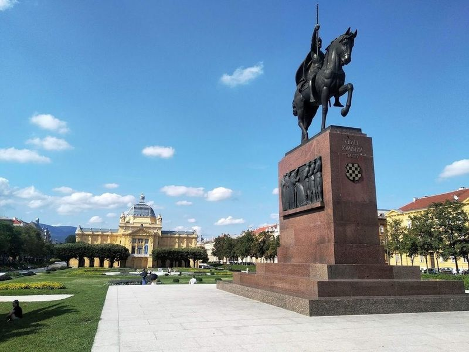
Trg Kralja Tomislava
King Tomislav’s Square, also known as Tomislavac, is a vibrant public space in Zagreb featuring an art pavilion and a towering statue of King Tomislav. The square hosts special events such as the Zagreb Classic festival of classical music during the summer months, where visitors can enjoy performances by a symphony orchestra in the beautiful adjacent park. Additionally, the square is home to Ice Park during the winter season, offering ice skating and cultural events amidst festive stalls.
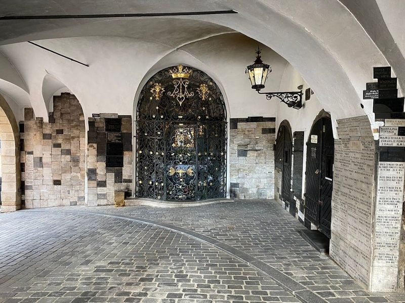
Stone Gate
Stone Gate is a historic city gate in Zagreb's Old Town, dating back to the 13th century and serving as part of the city's fortification. It now houses a small chapel dedicated to the Virgin Mary, drawing pilgrims who believe in its miraculous healing powers. The gate is adorned with candles from visitors offering silent prayers, creating a serene atmosphere.
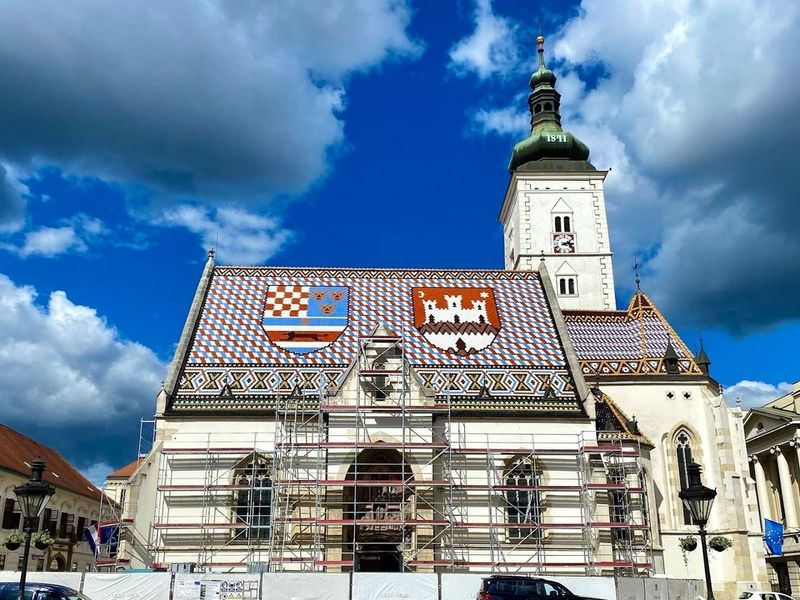
St. Mark's Church
Saint Mark’s Church is a monumental Catholic church in Zagreb, constructed in the 13th century and located in St. Mark's Square. The church features a medieval-style architecture with a Baroque bell tower added in the 17th century. Its most recognizable feature is the colorfully tiled roof depicting the city's emblem and Croatian coat of arms, making it a popular spot for history enthusiasts and photographers alike.
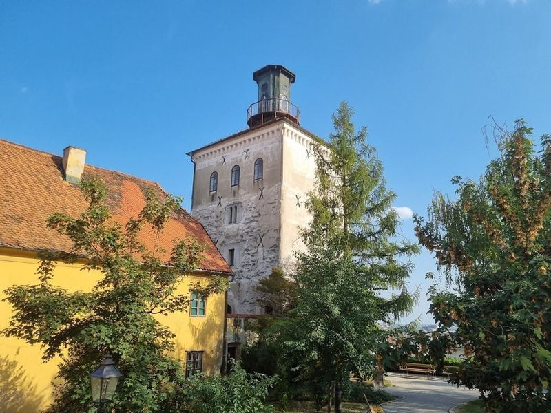
Lotrščak Tower
Lotrščak Tower, also known as Kula Lotrscak, is a 13th-century Romanesque tower located in Zagreb. Originally built to guard the southern gate of the Gradec town wall, it has become one of the city's most landmarks. The tower features an observation area that provides panoramic views of Zagreb and its surroundings.
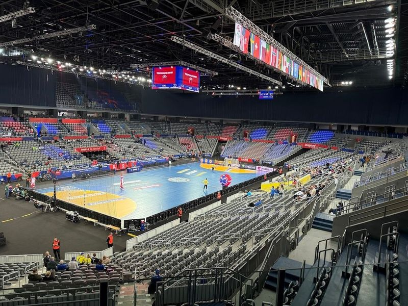
Arena Zagreb
Arena Zagreb is a renowned indoor multipurpose arena in Zagreb, known for its striking design featuring 86 large curved concrete columns and semi-translucent polycarbonate envelopes. With a capacity of 15,000 seats, it was built for the 2009 World Handball Championships and has since hosted various sports events and international pop concerts. The venue's flexibility in spatial organization makes it a must-visit for architecture enthusiasts.
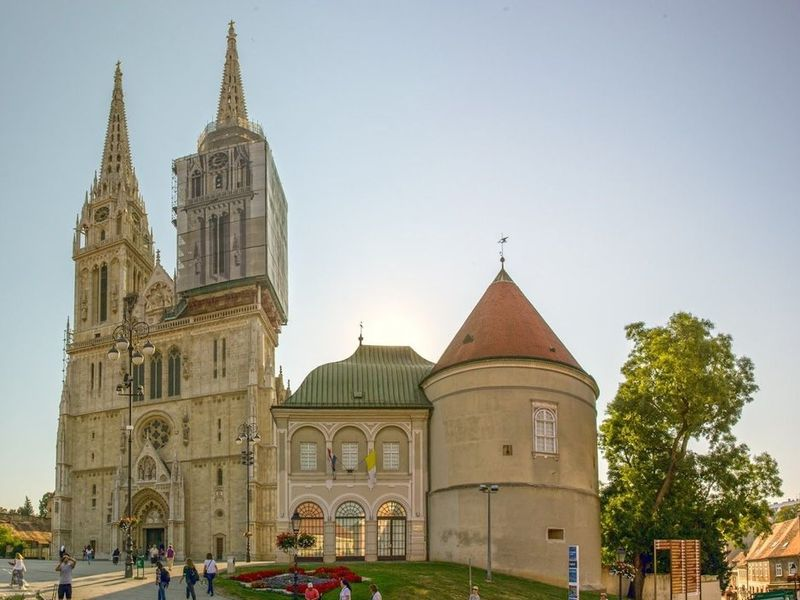
Cathedral of Zagreb
The Cathedral of Zagreb is a grand Roman Catholic edifice that underwent restoration in the 1990s. It hosts concerts like The Organs of the Zagreb Cathedral and Evenings on Gric cycle. The cathedral is a significant part of Zagreb's buildings, along with other landmarks such as Croatian National Theatre and St. Mark's Church.
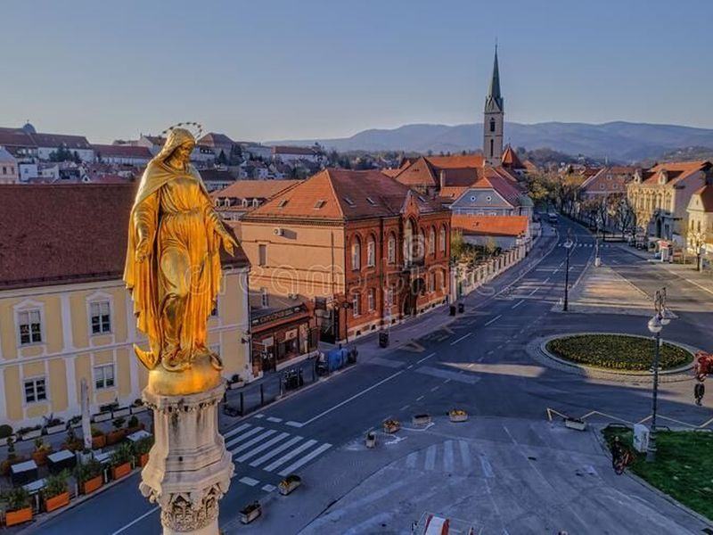
Monument of the Assumption of the Blessed Virgin Mary
The Monument of the Assumption of the Blessed Virgin Mary, located in front of Zagreb Cathedral, is a landmark. This Neo-Gothic style monument features a beautiful fountain with four impressive golden statues. The area can be crowded, but the architecture and design make it worth a visit. Although the cathedral is currently under renovation, the monument's graceful presence and picturesque surroundings are still captivating for visitors and photographers alike.
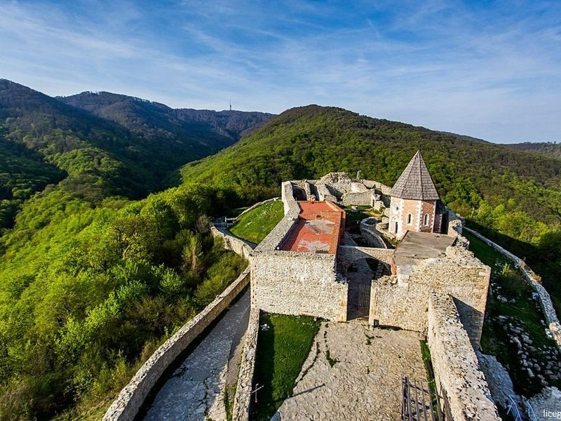
Medvedgrad
Medvedgrad, a medieval fortress located in Zagreb, offers visitors the chance to explore its intriguing history and surroundings. The castle provides a holistic experience for those who enjoy hiking through the forest to reach its top, where the Queen well serves refreshing mountain water. Visitors can also immerse themselves in the legend of the Black Queen by watching motion pictures projected on the walls.
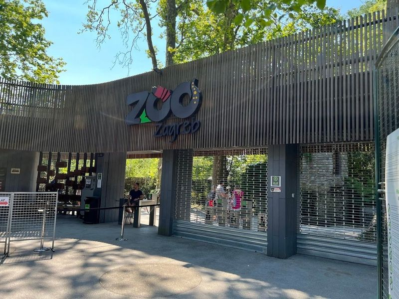
Zoo Zagreb
Zoo Zagreb, located within Maksimir Park, is a sprawling zoo that houses a diverse array of animals from around the world. Visitors can observe lions, lemurs, red pandas, capybaras, tapirs, wolves, wallabies, as well as an extensive variety of birds, fish, reptiles and insects. The zoo also features educational talks and feedings for an immersive experience. Additionally, there's a small petting zoo where children can interact with goats and sheep.
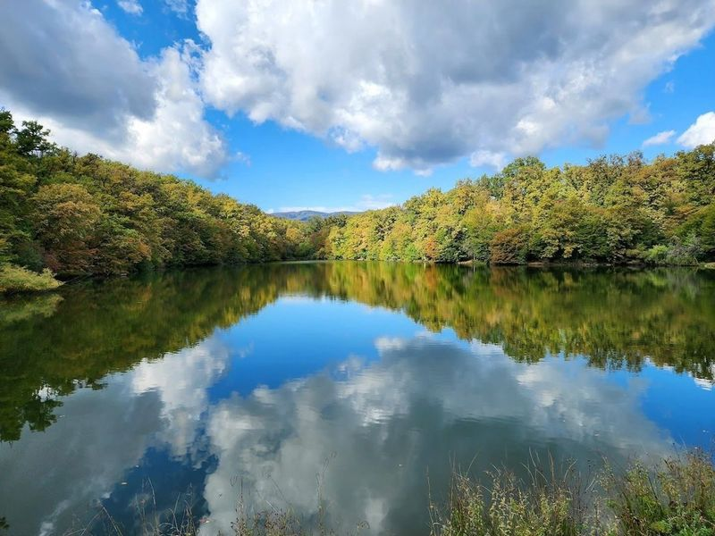
Park Maksimir
Park Maksimir is a family-friendly destination located in Zagreb, Croatia. It is the city's largest and oldest public park, spanning 44 acres of vine-covered forests, artificial lakes, creeks, and meadows. The park offers shaded trails for peaceful strolls and is home to diverse wildlife. Visitors can explore the expansive natural surroundings and even venture into the forest.
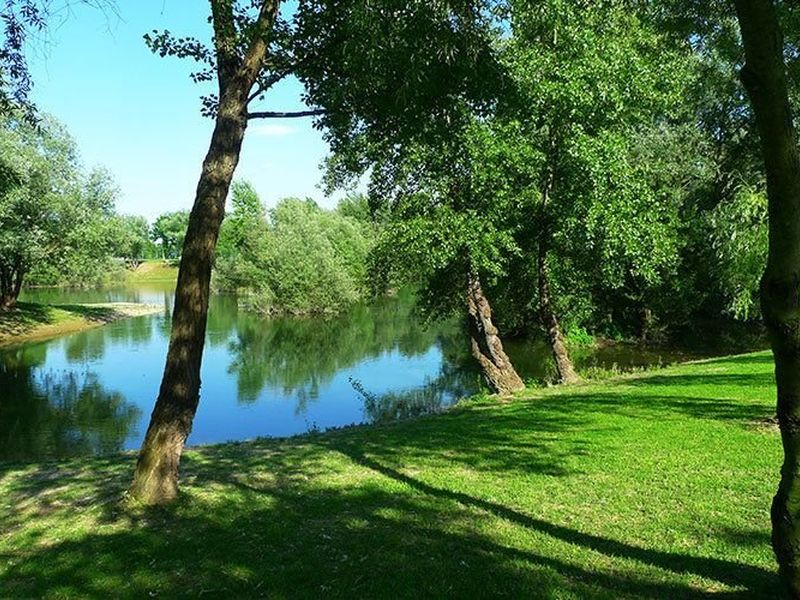
Bundek City Park
Bundek City Park, situated in the southwestern part of Zagreb, is a popular destination for both locals and tourists. Spanning approximately 45 hectares, this urban oasis centers around the picturesque Bundek Lake. During the summer months, it attracts visitors seeking relaxation and recreation. The park offers various activities such as picnicking by the lake, fishing, feeding swans, and enjoying playgrounds and rides for children.